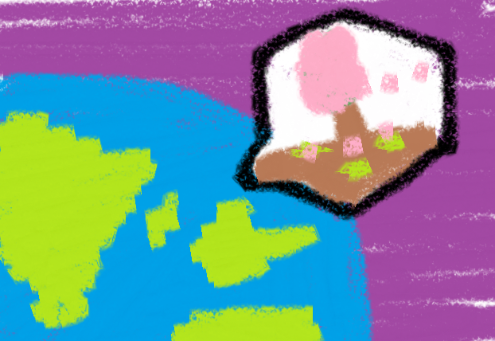
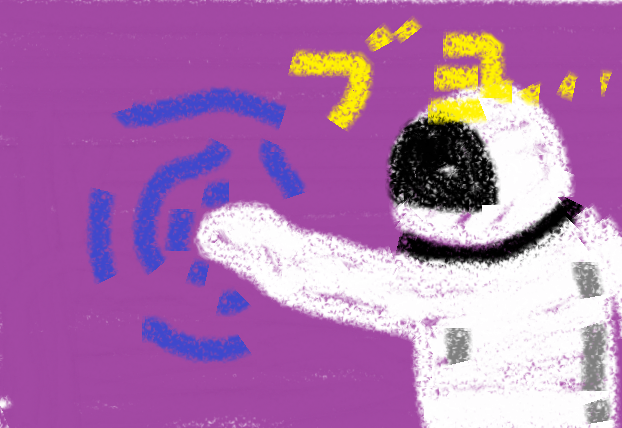
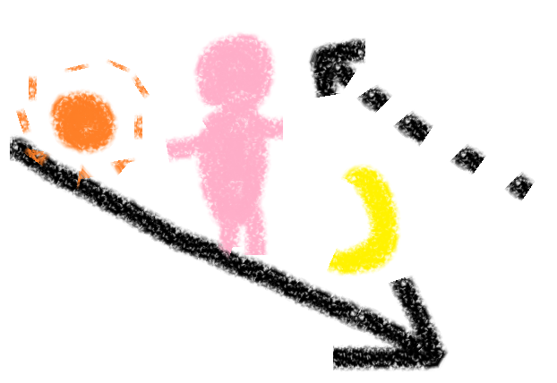
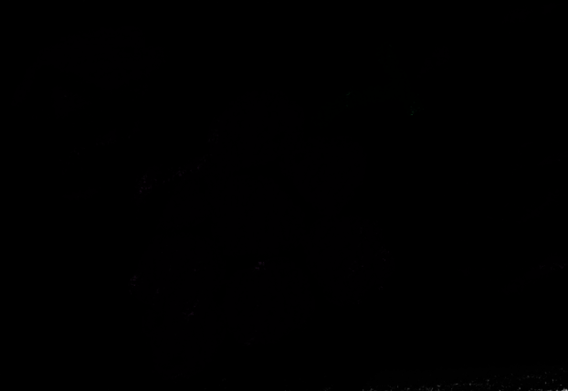
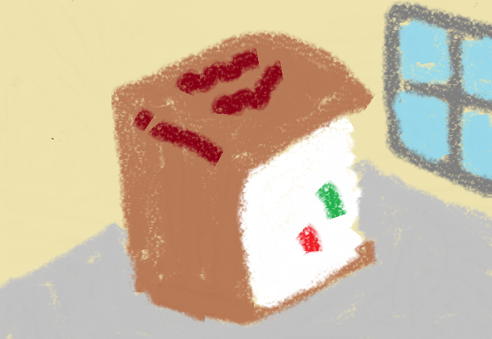
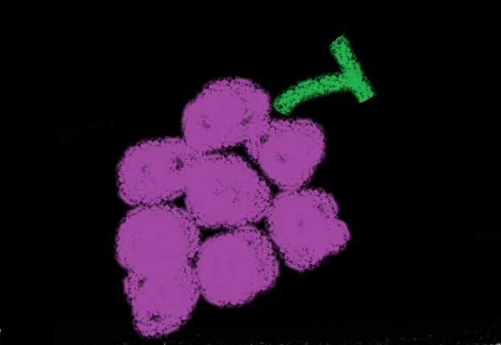

明後日の銀河ゆれる
ピー。ピー。
こちらおとめ座超銀河団、天の川銀河の地球、どうぞ。

137億年ぐらい前に、どこかでビッグバンがあって、全部がはじまった。それまでは？
それから宇宙はずうっと光の速さで広がり続けているみたい。
その外ってどうなっているんだろう。ずっと大きくなり続けたら、いつか場所なくなっちゃったりしないのかな。もし宇宙のはじっこまでいけたとして、そこにぶよぶよの膜があったら、おもしろいね。

心臓に手を当てると、ドキドキしている。息を吸うとちょっと早くなる。（これってもしかしてよくない？）その間に、宇宙がバカみたいなスピードで膨張して、どこかで誰かが歌を歌い終わって、恒星が爆発する。
ねえ、ほんとに時間ってわたしたちが向いてる方であってるのかな？

ほんとうは全部がもとに戻っていってて、わたしたちはそれに逆行して過去に向かい続けていて、思い出は全部未来の事なの。
そんなわけない？……そうかも。この世界にはわたしがいて、君がいて、鉄道が走っているけど、もし、この世界に何も、原子の一粒すらもなかったとして、そこに時間とか空間はあると思う？本当に何もない。真っ暗で、静かで、だれにも見られることのないすべて。

そこでは1秒の価値と1000秒の価値が一緒で、1分と1000年がまったくおなじなんだ。1ミリと5kmに何も変わりがなくて、1つの原子のサイズと1つの星のサイズの情報が全く同じ。なんでかって、はかる人がいないんだもの。
それじゃあ、何が空間を作って、時間を作ってくれたの？かみさま？そこにたまたまたくさんあったつぶつぶ？それとも、君？どれにしても、時間も空間もないからっぽに、何かがプレゼントしてくれたんだ。
この世界には宇宙がたくさんあるって言ってる人がいるんだって。ちょうどこの宇宙がぶどうの一粒で、それがたくさん、もしかしたら無限に広がっている。想像できる
？今空に向かって手を伸ばしたら、ずうっと先の方にこの宇宙の終わりがあって、その先に別の宇宙のはじまりがあるかもしれない。そのずうっと先に、また別の星があるかもしれないね。もし本当にたくさんの宇宙が無限にあったら素敵なことだよ？絵本の世界も、小説の世界も、確実にどこかの宇宙には存在するんだ。無限にページ数のある図鑑を読んでいるようなものだもん。

ねえ、ちょっと冒険しに行かない？この宇宙を出て、ちょっと角を曲がったところにある、パラレルワールド！
